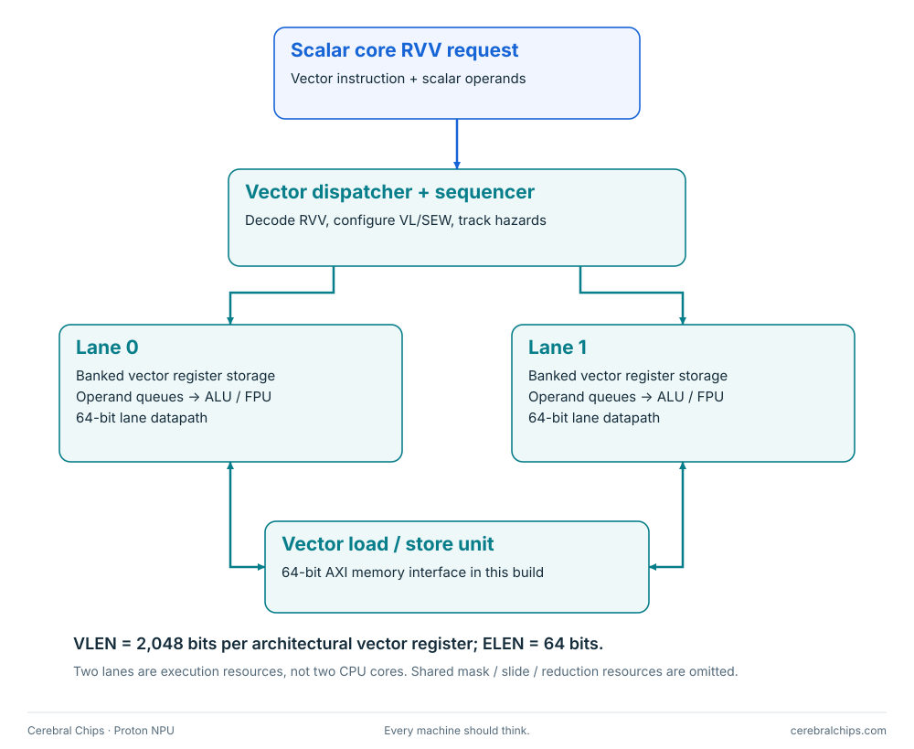

Block 02 / data-parallel execution
Ara: the vector unit
Two lanes execute vector instructions from CVA6 using wide architectural registers and an AXI path to shared memory.
Vector execution attached to CVA6
Ara implements RVV instructions. A vector register is much wider than a scalar register, and its storage and processing are spread across the lanes. VLEN describes architectural register capacity; the lane count describes physical execution resources.


| Property | Current implementation |
|---|---|
| Architecture | RISC-V Vector 1.0 |
| Lanes | 2 physical execution lanes; these are not CPU cores |
| Architectural vector registers | 32 × 2,048 bits = 8 KiB total |
| Maximum element width | ELEN = 64 bits |
| Lane datapath | 64 bits per lane |
| Memory interface | 64-bit AXI in this two-lane system |
| Programming | LLVM RVV intrinsics; no compiler fork |
| Interaction with matrix | Shared RAM through software copies; no direct vector-register-to-matrix port |
From C to vector hardware
vint8m1_t x = __riscv_vle8_v_i8m1(src, vl);
x = __riscv_vadd_vx_i8m1(x, 1, vl);
__riscv_vse8_v_i8m1(dst, x, vl);
The example loads signed bytes, adds one to each active element and writes the result to RAM. The matrix library later packs those bytes into its local A buffer. After matrix computation, a second RVV loop processes the INT32 outputs.
Contributor starting points
Use ./scripts/ara smoke for the baseline or ./scripts/ara matrix-smoke for the matrix-enabled system.